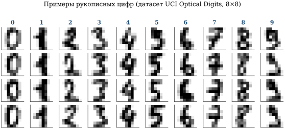
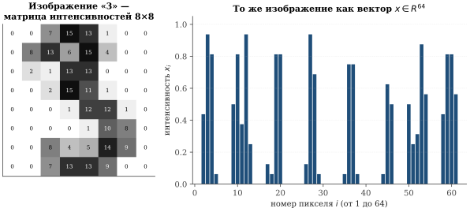
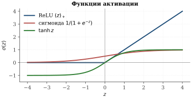
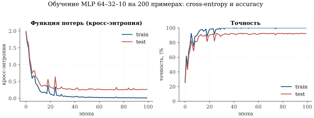
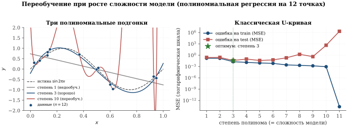
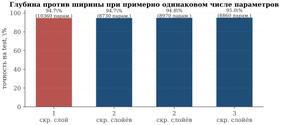
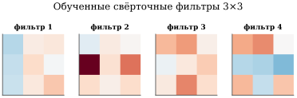
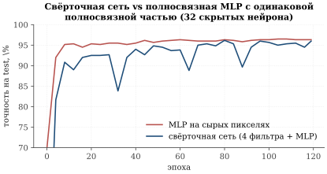
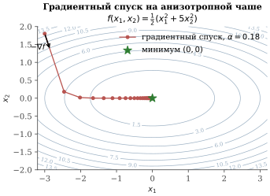

Задача классификации и нейронные сети
До сих пор мы решали задачи, в которых ответ модели — вещественное число. В задаче выборов это была доля голосов; у Гальтона — масса быка; у Кеплера — период обращения. Такие задачи называют задачами регрессии.
Но огромный класс практических задач устроен иначе. Алгоритму показывают фотографию — он должен сказать «кошка» или «собака». Письмо приходит в почтовый ящик — система решает: «спам» или «не спам». Изображение с томографа поступает в больницу — модель должна определить, есть ли на нём патология. Это задачи классификации: каждому входному объекту нужно сопоставить дискретную метку из конечного списка возможных классов.
В этом параграфе мы:
познакомимся с классической задачей классификации — распознаванием рукописных цифр;
покажем, как из принципа максимума правдоподобия выводится функционал кросс-энтропии — стандартная мера качества классификатора;
построим простейшие модели — полносвязную сеть и свёрточную сеть — и сравним их;
обнаружим важнейшее явление — переобучение (обнаружат его и сами вычислительные эксперименты);
обсудим теоретическое обоснование того, что нейронные сети могут приближать любую разумную зависимость — теоремы Колмогорова–Арнольда и Цыбенко;
изучим основной численный метод обучения — градиентный спуск — и его эффективную реализацию для нейронных сетей — обратное распространение ошибки.
Задача классификации MNIST и UCI Digits
Самый знаменитый «учебный» датасет для классификации — это MNIST (Modified National Institute of Standards and Technology database): 70 000 чёрно-белых изображений рукописных цифр размера 28\times 28 пикселей. Его собрал в 1998 г. Янн ЛеКун, который позже получил премию Тьюринга за работы по глубокому обучению. Все обсуждения и итоговые выводы этой главы относятся именно к MNIST как к каноническому ориентиру — именно его читатель встретит во всех профессиональных курсах и публикациях по машинному обучению.
Почему в численных экспериментах книги — не MNIST. Чтобы все приводимые ниже эксперименты можно было полностью воспроизвести на школьном ноутбуке за несколько секунд, мы используем UCI Optical Digits — меньший близкий по структуре датасет: те же 10 классов цифр (0–9), но изображения 8\times 8 (всего 1 797 примеров вместо 70 000). На полном MNIST обучение глубокой сети занимает минуты или десятки минут даже на современном железе и плохо ложится в формат «прочитал страницу учебника — запустил код — получил картинку». Качественные эффекты — переобучение, U-образная кривая ошибки, преимущество свёрточных сетей перед полносвязными — проявляются и на «миниатюре» точно так же; в подписях к рисункам сравнения с полноразмерным MNIST и ImageNet будут приведены отдельно (рис. 3.13).

Математическая постановка. Изображение размера 8\times 8 — это таблица из 64 чисел (значений яркости от 0 до 16). «Развернём» эту таблицу в один длинный вектор:
\mathbf x \;=\; (x_1,\,x_2,\,\dots,\,x_{64}) \;\in\; \mathbb{R}^{64}.
Так каждая цифра превращается в точку 64-мерного пространства. Для полноразмерного MNIST — 784-мерного (рис. 3.14).

Метка — одно из 10 значений: y\in\{0,1,\dots,9\}. Датасет — это набор пар
\{(\mathbf x_i,\,y_i)\}_{i=1}^{N},\qquad \mathbf x_i\in\mathbb{R}^{64},\quad y_i\in\{0,\dots,9\}.
Задача классификации — построить функцию-классификатор \hat y=\hat y(\mathbf x), которая по новому, ранее не виденному вектору \mathbf x предсказывает правильную метку.
Чем классификация отличается от регрессии
В задаче регрессии (3.2) функция, которую мы искали, отображала \mathbb{R}^{d}\to\mathbb{R} — то есть выдавала одно вещественное число. В задаче классификации мы хотим, чтобы алгоритм выдавал категориальный ответ. Принципиальные отличия — два.
Отличие 1: ответ не число, а распределение вероятностей. Хорошая модель должна выдавать не «эта цифра — семёрка», а более информативно: «семёрка с вероятностью 92 %, единица — 5 %, четвёрка — 2 %, остальное — меньше процента». Соответственно выход модели — это вектор из 10 чисел, неотрицательных и суммирующихся в 1:
\mathbf p(\mathbf x) \;=\; \bigl(p_0(\mathbf x),\,p_1(\mathbf x),\,\dots,\,p_9(\mathbf x)\bigr), \qquad p_c \geq 0,\quad \sum_{c=0}^{9} p_c=1.
Здесь p_c(\mathbf x) — предсказанная моделью вероятность того, что \mathbf x изображает цифру c. Окончательное предсказание метки — \hat y(\mathbf x)=\operatorname*{arg\,max}_{c} p_c(\mathbf x).
Отличие 2: функционал ошибки — не сумма квадратов, а кросс-энтропия. В регрессии мы минимизировали \sum_i (y_i-\hat y_i)^{2} — это была ОМП при гауссовом шуме. Сейчас «гауссова шума» нет: правильная метка y_i — это дискретная категория. Что вместо суммы квадратов? Принцип максимума правдоподобия — даст ответ.
Вывод кросс-энтропии из ОМП
Модель порождения данных. Считаем, что наблюдённые пары (\mathbf x_i,y_i) порождены так: для каждого i метка y_i — случайная величина со значениями в \{0,1,\dots,9\} и распределением, которое зависит от \mathbf x_i:
\Pr(y_i=c\,|\,\mathbf x_i,\boldsymbol\theta)\;=\;p_c(\mathbf x_i;\boldsymbol\theta).
Здесь \boldsymbol\theta — параметры модели (веса и смещения нейронной сети), которые предстоит определить. Совместное правдоподобие выборки размера N — это произведение вероятностей:
L(\boldsymbol\theta)\;=\;\prod_{i=1}^{N} p_{y_i}(\mathbf x_i;\boldsymbol\theta).
Берём отрицательный логарифм (минимизировать удобнее, чем максимизировать) и нормируем на размер выборки:
\tag{3.29} \;\; \mathcal L(\boldsymbol\theta)\;\stackrel{\mathrm{def}}{=}\; -\frac{1}{N}\sum_{i=1}^{N}\ln p_{y_i}(\mathbf x_i;\boldsymbol\theta)\;\longrightarrow\;\min_{\boldsymbol\theta}. \;\;
Этот функционал называется кросс-энтропией[^1] (англ. cross-entropy, categorical log-loss). Его минимизация по \boldsymbol\theta — это в точности максимизация правдоподобия. Мы снова применили один и тот же универсальный принцип — и получили совершенно другой функционал, естественный для своей задачи.
В теории информации Клод Шеннон (1948) ввёл понятие энтропии распределения \mathbf q:
H(\mathbf q)\;=\;-\sum_c q_c\ln q_c,
характеризующее «непредсказуемость» исхода. Кросс-энтропия двух распределений \mathbf q (истинное) и \mathbf p (предсказанное) определяется как
H(\mathbf q,\mathbf p)\;=\;-\sum_c q_c\ln p_c.
В нашей задаче \mathbf q — это «one-hot» вектор истины (q_c=1 только при c=y_i, иначе 0), а \mathbf p — предсказание модели. Тогда H(\mathbf q_i,\mathbf p_i)=-\ln p_{y_i}, и формула (3.29) оказывается средней по выборке кросс-энтропией.
Полносвязная нейронная сеть
Нам осталось определить семейство функций p_c(\mathbf x;\boldsymbol\theta), по которому будет проводиться минимизация. Самое известное — полносвязная нейронная сеть, она же многослойный персептрон (MLP, multilayer perceptron).
Идея «искусственного нейрона» — линейная функция от входов, пропущенная через нелинейность — восходит к работам Уоррена Маккаллока и Уолтера Питтса (1943) и обучаемому персептрону Фрэнка Розенблатта (1958). Розенблатт построил физическую машину Mark I Perceptron на лампах и фоторезисторах; пресса 1958 г. восторженно писала, что «машина скоро будет ходить, разговаривать и осознавать своё существование».
Однако в 1969 г. Марвин Минский и Сеймур Пейперт в книге Perceptrons строго доказали, что один-единственный слой не может реализовать даже простейшую функцию — исключающее ИЛИ (XOR). Это охладило интерес к нейросетям почти на 15 лет.
Возрождение пришло в 1986 г., когда Дэвид Румельхарт, Джеффри Хинтон и Рональд Уильямс представили универсальный алгоритм обучения многослойных сетей — метод обратного распространения ошибки (backpropagation). С этого момента и начинается эпоха современных нейронных сетей. Подчеркнём, что общая математическая формула того, что вычислительная сложность подсчёта градиента сравнима со сложностью самого вычисления функции, в общем случае была строго установлена советскими математиками: Юрий Геннадьевич Ким, Юрий Евгеньевич Нестеров, Александр Скоков, Виктор Черкасский (работы начала 1980-х). Об этом подробнее ниже, в разделе 3.22.
В 2018 г. премию Тьюринга — «нобелевскую» премию по информатике — получили Янн ЛеКун, Джеффри Хинтон и Йошуа Бенжио — «за концептуальные и инженерные прорывы, благодаря которым глубокие нейронные сети стали важнейшим компонентом современной информатики».
Строгое определение. Нам понадобится понятие матрично-векторного умножения.
Пусть A=(a_{ij}) — матрица размера m\times n (то есть m строк и n столбцов), и \mathbf z=(z_1,\dots,z_n)^{\top} — вектор из \mathbb{R}^{n}. Произведение A\mathbf z — это вектор из \mathbb{R}^{m}, i-я координата которого равна
\tag{3.30} (A\mathbf z)_i\;=\;\sum_{j=1}^{n} a_{ij}\,z_j,\qquad i=1,\dots,m.
Иначе говоря, мы скалярно умножаем i-ю строку матрицы на вектор и получаем i-ю координату результата.
A=\begin{pmatrix}1 & 2 & -1\\ 3 & 0 & 4\end{pmatrix},\qquad \mathbf z=\begin{pmatrix}1\\2\\3\end{pmatrix}.
Тогда
A\mathbf z=\begin{pmatrix}1\cdot 1+2\cdot 2+(-1)\cdot 3\\ 3\cdot 1+0\cdot 2+4\cdot 3\end{pmatrix}= \begin{pmatrix}2\\15\end{pmatrix}.
Теперь можем определить полносвязную сеть (рис. 3.15).
Полносвязная нейронная сеть (MLP) глубины L — это функция \mathbf x\mapsto \mathbf p(\mathbf x), заданная как композиция L слоёв:
$$ \begin{aligned} \mathbf z^{(\ell)} &= W^{(\ell)} \mathbf a^{(\ell-1)} + \mathbf b^{(\ell)},\qquad \mathbf a^{(\ell)} = \sigma\bigl(\mathbf z^{(\ell)}\bigr), \qquad \ell=1,\dots,L-1, \\ \mathbf z^{(L)} &= W^{(L)} \mathbf a^{(L-1)} + \mathbf b^{(L)},\qquad \mathbf p(\mathbf x) = \mathrm{softmax}\bigl(\mathbf z^{(L)}\bigr). \end{aligned}$$
Здесь \mathbf a^{(0)}=\mathbf x (вход), W^{(\ell)}\in\mathbb{R}^{d_\ell\times d_{\ell-1}} — матрица весов \ell-го слоя, \mathbf b^{(\ell)}\in\mathbb{R}^{d_\ell} — вектор смещений (bias). Функция \sigma применяется покомпонентно — это функция активации (см. ниже). Числа d_1,\dots,d_{L-1} — ширины скрытых слоёв; d_L — число классов (у нас — 10). Функция softmax превращает вектор произвольных вещественных чисел в распределение вероятностей:
\tag{3.33} \mathrm{softmax}(\mathbf z)_c\;=\;\frac{e^{z_c}}{\sum_{c'} e^{z_{c'}}}.
Совокупность всех матриц W^{(\ell)} и векторов \mathbf b^{(\ell)} объявляется обучаемыми параметрами \boldsymbol\theta модели.

Содержательная интерпретация. Без функций активации \sigma композиция линейных преобразований оставалась бы линейной (произведение матриц — снова матрица), и вся сеть свелась бы к простой линейной модели. Именно нелинейность делает сеть выразительной — позволяет ей описывать сложные, непрямолинейные зависимости.
Подсчёт числа параметров. Для сети 64 \to 32 \to 10 (то есть один скрытый слой шириной 32):
\#\boldsymbol\theta\;=\;\underbrace{64\cdot 32 + 32}_{\text{слой 1}}\;+\; \underbrace{32\cdot 10+10}_{\text{слой 2}} \;=\;2080+330\;=\;2410.
Сравните: датасет UCI Digits содержит около 1800 изображений, то есть параметров уже больше, чем обучающих примеров. Эта диспропорция — типичная для современных нейросетей — ставит важный вопрос о переобучении, к которому мы скоро вернёмся.
Обучение MLP и кривые потерь
Минимизация функционала (3.29) в нейронных сетях — это большая задача оптимизации в пространстве \boldsymbol\theta размерности от тысяч до миллиардов. Аналитического решения нет (как было в МНК), поэтому применяют численные методы — прежде всего градиентный спуск. Подробно к нему мы вернёмся в разделе 3.21; пока примем как данность и посмотрим на поведение функции потерь и точности в процессе обучения.

В этом эксперименте модель достигает \approx 92\,\% точности на тесте — вполне приличный результат для столь простой архитектуры.
Переобучение и U-образная кривая
Что произойдёт, если взять модель «помощнее»? Интуитивно: чем больше параметров, тем больше выразительная сила, тем лучше модель должна работать. Это верно до определённого предела — и катастрофически неверно после него. Это и называется переобучением.
Переобучение (англ. overfitting) — ситуация, когда модель отлично запоминает обучающую выборку (ошибка на train близка к нулю), но плохо работает на ранее не виденных данных (ошибка на test велика). Модель «выучила шум», а не закономерность.
Простейший пример — полиномиальная регрессия. Возьмём 12 точек, порождённых функцией y=\sin 2\pi x плюс небольшой гауссов шум, и будем приближать их полиномами растущей степени.

Три выборки: train, validation, test. Стандартный приём борьбы с переобучением — разбить имеющиеся данные на три непересекающиеся части.
Обучающая (train) — на ней непосредственно подбирают параметры \boldsymbol\theta (веса сети).
Валидационная (validation) — на ней подбирают гиперпараметры: глубину сети, ширину скрытого слоя, скорость обучения, степень полинома и т. п. Это не обучение в строгом смысле — мы лишь сравниваем разные варианты модели.
Контрольная (test) — её модель видит только один раз, в самом конце, и только для того, чтобы честно оценить качество финальной модели. Если test-выборка используется неоднократно для подбора, она перестаёт быть «честной» — происходит так называемая утечка информации.
Типичные пропорции: 60–80\,\% на обучение, по 10–20\,\% на остальные две.
Теоремы об универсальной аппроксимации
Возникает естественный вопрос: что в принципе может выучить нейронная сеть? Может ли она приблизить произвольную непрерывную функцию — или есть классы зависимостей, недоступные ей в принципе?
Ответ дают два глубоких математических результата, открытые с разрывом в почти 30 лет.
Всякая непрерывная функция f\colon[0,1]^{n}\to\mathbb{R} от n переменных представима в виде суперпозиции непрерывных функций одной переменной и операции сложения:
\tag{3.34} f(x_1,\dots,x_n)\;=\;\sum_{q=0}^{2n}\Phi_q\!\left(\sum_{p=1}^{n}\psi_{q,p}(x_p)\right),
где \Phi_q, \psi_{q,p} — некоторые непрерывные функции одной переменной.
Эта теорема была доказана А. Н. Колмогоровым в 1957 г. и усилена В. И. Арнольдом — в виде, эквивалентном решению 13-й проблемы Гильберта (доказательство того, что любая непрерывная функция трёх переменных представима суперпозицией функций двух переменных). С точки зрения нейронных сетей утверждение (3.34) говорит: двух слоёв и нескольких десятков аккуратно выбранных одномерных функций уже хватает для представления любой непрерывной функции от n переменных. Это, конечно, теоретическое утверждение: функции \Phi_q,\psi_{q,p} из доказательства Колмогорова чрезвычайно сложно устроены и непрактичны для прямого обучения. Но идейно теорема заложила фундамент.
Современная формулировка — с обычными функциями активации, такими как сигмоида или ReLU — была получена Дж. Цыбенко.
Пусть \sigma\colon\mathbb{R}\to\mathbb{R} — непрерывная, ограниченная, монотонно возрастающая функция (например, сигмоида). Тогда для любой непрерывной функции f на компакте K\subset\mathbb{R}^{n} и любого \varepsilon>0 существуют число N, числа a_j,b_j,w_{j,i}, j=1,\dots,N, i=1,\dots,n, такие что функция
\tag{3.35} g(\mathbf x)\;=\;\sum_{j=1}^{N} a_j\,\sigma\!\left(\sum_{i=1}^{n}w_{j,i}\,x_i+b_j\right)
приближает f равномерно на K с точностью \varepsilon: \sup_{\mathbf x\in K}|g(\mathbf x)-f(\mathbf x)|<\varepsilon.
Иначе говоря, одного скрытого слоя достаточной ширины достаточно, чтобы приблизить любую непрерывную функцию с заданной точностью. Это теорема об универсальной аппроксимации (рис. 3.18).
Теорема Цыбенко требует очень широких сетей: чтобы достичь точности \varepsilon, ширина N может расти экспоненциально с размерностью n или с 1/\varepsilon. На практике куда выгоднее глубокие сети — те, что используют несколько слоёв средней ширины. Это утверждение было математически уточнено в работах 2010-х годов: для некоторых классов функций глубокая сеть требует экспоненциально меньше параметров, чем эквивалентная по точности неглубокая.

Свёрточные нейронные сети
Полносвязная сеть «не знает» о том, что её вход — это изображение. Она одинаково обработала бы цифру и любую случайную перестановку её 64 пикселей. Это и теоретически, и практически — неоптимально: в изображении соседние пиксели связаны (вместе образуют чёрточки, дуги, кружочки — из которых и состоит цифра), а далёкие — почти независимы.
Идея использовать локальные «свёрточные» фильтры пришла из биологии. В 1962 г. нейрофизиологи Дэвид Хьюбел и Торстен Визель показали, что зрительная кора кошки устроена иерархически: на первом уровне — нейроны, реагирующие на простые признаки (края, отрезки прямых под определённым углом); на следующих — на их комбинации (углы, дуги, контуры); и так до целых форм. За это открытие они получили Нобелевскую премию по физиологии в 1981 г.
В 1980 г. японский исследователь Кунихико Фукусима реализовал эту идею в виде неокогнитрона — иерархической сети для распознавания символов. А в 1989 г. Янн ЛеКун — тогда ещё аспирант у Хинтона — добавил к неокогнитрону обучение методом обратного распространения и предложил универсальную архитектуру свёрточной нейронной сети (Convolutional Neural Network, CNN). Его сеть LeNet-5 (1998) распознавала рукописные цифры с точностью 99\,\% и применялась для чтения почтовых индексов и банковских чеков.
В 2012 г. работа Алекса Крижевского, Ильи Суцкевера и Джеффри Хинтона ImageNet Classification with Deep Convolutional Neural Networks (сеть AlexNet) продемонстрировала, что свёрточные сети, обученные на графических процессорах (GPU), могут с разгромным счётом превзойти все предыдущие подходы в задаче классификации изображений. С этого момента и началась «революция глубокого обучения».
Что такое свёртка. Рассмотрим изображение X размера H\times W и небольшой фильтр K размера k\times k (обычно k=3 или 5). Свёрткой изображения с фильтром называется новое изображение Y, в каждой точке которого стоит «скалярное произведение» фильтра и маленького окошка изображения:
\tag{3.36} Y_{r,c}\;=\;\sum_{u=1}^{k}\sum_{v=1}^{k}K_{u,v}\,X_{r+u-1,\,c+v-1}.
Фильтр «скользит» по всему изображению; в итоге получается новая карта признаков, чувствительная к тому, что «видит» фильтр (см. рис. 3.19 — четыре фильтра, обученные на UCI Digits, очевидно выделяют локальные «уголки» и «полосы»).

Свёрточная нейронная сеть — это нейронная сеть, в которой некоторые слои представляют собой не полносвязные матрично-векторные умножения, а свёртки вида (3.36) с обучаемыми фильтрами K. Обычно после свёртки применяется функция активации и операция пулинга (выборки максимума по окрестности — для уменьшения разрешения). После нескольких свёрточных слоёв полученная «карта признаков» разворачивается в вектор и передаётся в обычный полносвязный слой с softmax.
Сравнение MLP и CNN на UCI Digits. Чтобы оценить выигрыш от свёрточной структуры, обучим две сети с примерно одинаковым числом параметров: обычную MLP и CNN с одним свёрточным слоем. Результат показан на рис. 3.20.

Градиент и градиентный спуск
Перейдём к ключевому вопросу: как же подобрать параметры \boldsymbol\theta, минимизирующие функционал (3.29)? Аналитическое решение, как было в МНК (3.10), здесь невозможно: функция \mathcal L(\boldsymbol\theta) очень сложная, многомерная, нелинейная. Поэтому применяют итерационные численные методы, и важнейший из них — градиентный спуск.
Производная по направлению и градиент
Пусть F\colon\mathbb{R}^{d}\to\mathbb{R} — дифференцируемая функция (в нашем случае F=\mathcal L, а d — число параметров сети). В точке \boldsymbol\theta зададим какое-нибудь направление \mathbf v\in\mathbb{R}^{d} единичной длины. Производной функции F в точке \boldsymbol\theta по направлению \mathbf v называется
\partial_{\mathbf v} F(\boldsymbol\theta)\;=\; \lim_{t\to 0}\frac{F(\boldsymbol\theta+t\mathbf v)-F(\boldsymbol\theta)}{t}.
Чтобы вычислить её, рассмотрим функцию одной переменной \varphi(t)=F(\boldsymbol\theta+t\mathbf v) и применим правило дифференцирования сложной функции:
\tag{3.37} \partial_{\mathbf v} F\;=\;\varphi'(0)\;=\;\sum_{j=1}^{d}\frac{\partial F}{\partial\theta_j}\cdot v_j \;=\;\langle \nabla F,\,\mathbf v\rangle,
где \nabla F=\bigl(\partial F/\partial\theta_1,\dots,\partial F/\partial\theta_d\bigr) — градиент функции F в точке \boldsymbol\theta, а \langle\cdot,\cdot\rangle — скалярное произведение в \mathbb{R}^{d}.
Среди всех единичных векторов \mathbf v\in\mathbb{R}^{d} производная \partial_{\mathbf v} F(\boldsymbol\theta) принимает минимальное значение при
\tag{3.38} \mathbf v^{\star}\;=\;-\frac{\nabla F(\boldsymbol\theta)}{\left\lVert \nabla F(\boldsymbol\theta) \right\rVert}.
При этом \partial_{\mathbf v^{\star}} F=-\left\lVert \nabla F(\boldsymbol\theta) \right\rVert.
Доказательство. По неравенству Коши–Буняковского \langle \nabla F,\mathbf v\rangle\geq -\left\lVert \nabla F \right\rVert\cdot\left\lVert \mathbf v \right\rVert=-\left\lVert \nabla F \right\rVert, с равенством в точности тогда, когда \mathbf v сонаправлен с -\nabla F.\square
Этот простой факт — сердце всей теории численной оптимизации. Локально, для уменьшения функции F, надо двигаться в сторону антиградиента. Именно так устроен метод градиентного спуска:
\tag{3.39} \; \boldsymbol\theta_{k+1}\;=\;\boldsymbol\theta_k\;-\;\alpha\,\nabla F(\boldsymbol\theta_k) \;
Здесь \alpha>0 — шаг обучения (learning rate), гиперпараметр. Слишком маленький — сходимость медленная; слишком большой — итерации могут «перескакивать» через минимум и расходиться (рис. 3.21).

Стохастический градиентный спуск (SGD)
Когда обучающая выборка велика, вычислять полный градиент \nabla\mathcal L(\boldsymbol\theta)=\frac{1}{N}\sum_{i=1}^{N}\nabla\ell_i(\boldsymbol\theta) (где \ell_i=-\ln p_{y_i}(\mathbf x_i;\boldsymbol\theta) — ошибка на i-м примере) на каждом шаге — очень дорого. Поэтому используют стохастический градиентный спуск (SGD): на каждой итерации случайно выбирается батч (англ. batch, «пачка») — подмножество B_k\subset\{1,2,\dots,N\} из m примеров, — и шаг делается по приближённому градиенту, вычисленному только по этому батчу:
\tag{3.40} \boldsymbol\theta_{k+1}\;=\;\boldsymbol\theta_k\;-\;\alpha\,\widehat{\nabla\mathcal L}(\boldsymbol\theta_k), \qquad \widehat{\nabla\mathcal L}=\frac{1}{m}\sum_{i\in B_k}\nabla\ell_i.
Здесь B_k — случайное подмножество индексов («мини-батч» на шаге k), |B_k|=m, обычно m\in\{32,64,128,256\}. Такой приближённый градиент — несмещённая оценка истинного градиента (в духе ОМП!), но вычисляется в N/m раз быстрее.
Дополнительный бонус: «шум» от случайного выбора батча помогает итерациям выбираться из неглубоких локальных минимумов и седловых точек. Поэтому SGD — де-факто стандартный оптимизатор глубоких сетей.
Метод обратного распространения ошибки
Чтобы реализовать градиентный спуск, надо уметь вычислять градиент функции потерь \mathcal L по параметрам \boldsymbol\theta. В нейронной сети это нетривиально: параметры \boldsymbol\theta запрятаны в матрицы W^{(\ell)} нескольких слоёв, и каждая участвует в формуле потерь через цепочку преобразований
\mathbf x\;\to\;\mathbf z^{(1)}\;\to\;\mathbf a^{(1)}\;\to\;\mathbf z^{(2)}\;\to\;\dots\;\to\;\mathbf p\;\to\;\mathcal L.
Прямой подсчёт частных производных «в лоб» — через определение производной как предела — потребовал бы для каждого параметра отдельного перевычисления всей сети. Для сети с миллионом параметров это означало бы миллион полных прогонов вместо одного — полностью неприемлемо.
Обратное распространение ошибки (backpropagation) — алгоритм, который вычисляет градиент сразу по всем параметрам с вычислительной стоимостью, сравнимой со стоимостью одного прогона функции. Идея алгоритма — системное применение цепного правила дифференцирования.
Backpropagation — классический пример переоткрытия в науке. Идея многократно появлялась с 1960-х:
Сеппо Линнайнмаа (1970) — финский магистр, в диссертации описал общий алгоритм автоматического дифференцирования в обратном режиме.
Ким Юрий Геннадьевич, Нестеров Юрий Евгеньевич, Скоков Александр, Черкасский Виктор — работы начала 1980-х в СССР: в общей форме строго установлен фундаментальный результат о том, что вычислительная сложность подсчёта градиента дифференцируемой функции, заданной программой, ограничена сверху константой, умноженной на сложность вычисления самой функции. Этот результат — математическая основа того, что современные «миллиарды параметров» вообще возможно обучать.
Поль Вербос (1974, докторская диссертация Гарварда) и Дэвид Румельхарт, Джеффри Хинтон, Рональд Уильямс (1986) — именно последняя работа в журнале Nature популяризовала backpropagation в применении к обучению многослойных нейронных сетей.
Сегодня backpropagation реализован в каждой библиотеке глубокого обучения (PyTorch, TensorFlow, JAX) как automatic differentiation.
Идея алгоритма для MLP.
Рассмотрим сеть из определения 3.12. Ради прозрачности выкладок ограничимся одним обучающим примером (\mathbf x,y); функция потерь \ell=-\ln p_y.
Прямой проход. Сначала вычисляем все промежуточные значения \mathbf z^{(\ell)},\mathbf a^{(\ell)} ровно так, как они определены в формулах (3.31), (3.32). Это — один обычный прогон сети.
Обратный проход. Хотим вычислить градиенты потерь по всем параметрам. Для \ell-го слоя обозначим
\tag{3.41} \boldsymbol\delta^{(\ell)}\;\stackrel{\mathrm{def}}{=}\;\frac{\partial \ell}{\partial \mathbf z^{(\ell)}}\;\in\;\mathbb{R}^{d_\ell}.
Это вспомогательный вектор; его называют «ошибкой \ell-го слоя». Алгоритм состоит из трёх формул, получаемых строгим применением цепного правила:
(B1) Ошибка на последнем слое. Для пары «softmax + кросс-энтропия» прямой подсчёт даёт красивую формулу:
\tag{3.42} \boldsymbol\delta^{(L)}\;=\;\mathbf p\;-\;\mathbf e_y,
где \mathbf e_y — one-hot вектор истины (1 в позиции y, 0 в остальных). То есть ошибка — это просто разница между предсказанным распределением вероятностей и истинным.
(B2) Распространение ошибки назад по слоям. Связь между ошибками двух соседних слоёв даётся формулой
\tag{3.43} \boldsymbol\delta^{(\ell-1)}\;=\;\bigl(W^{(\ell)}\bigr)^{\top}\boldsymbol\delta^{(\ell)}\;\odot\;\sigma'\!\bigl(\mathbf z^{(\ell-1)}\bigr),
где \odot — покомпонентное произведение векторов, а \sigma' применяется покомпонентно. Откуда она берётся? Распишем цепное правило для одного перехода между слоями: \mathbf z^{(\ell)}=W^{(\ell)}\mathbf a^{(\ell-1)}+\mathbf b^{(\ell)} и \mathbf a^{(\ell-1)}=\sigma(\mathbf z^{(\ell-1)}). Тогда
\frac{\partial\ell}{\partial z^{(\ell-1)}_j} =\sum_{i}\frac{\partial\ell}{\partial z^{(\ell)}_i}\cdot \frac{\partial z^{(\ell)}_i}{\partial a^{(\ell-1)}_j}\cdot \frac{\partial a^{(\ell-1)}_j}{\partial z^{(\ell-1)}_j} =\sum_{i}\delta^{(\ell)}_i\cdot W^{(\ell)}_{i,j}\cdot \sigma'\!\bigl(z^{(\ell-1)}_j\bigr).
Собирая всё по j в один вектор, получаем именно (3.43). Это и есть «распространение ошибки назад»: ошибка более глубокого слоя \ell «протаскивается» через транспонированную матрицу весов в более ранний слой \ell-1.
(B3) Градиенты по параметрам. Зная \boldsymbol\delta^{(\ell)}, градиенты по параметрам \ell-го слоя выписываются сразу:
\begin{aligned} \frac{\partial \ell}{\partial W^{(\ell)}} &= \boldsymbol\delta^{(\ell)}\bigl(\mathbf a^{(\ell-1)}\bigr)^{\top}, \\ \frac{\partial \ell}{\partial \mathbf b^{(\ell)}} &= \boldsymbol\delta^{(\ell)}. \end{aligned}
(Первое — матрица того же размера, что W^{(\ell)}; второе — вектор.)
Стоимость алгоритма. Каждая из формул (3.43), (3.44) — это одно матрично-векторное умножение, по стоимости такое же, как и прямой проход для того же слоя. Итого: полный обратный проход стоит не дороже одного прямого — то есть мы получаем все градиенты по всем параметрам ценой одного дополнительного прохода. Это и есть тот фундаментальный результат, который в общей форме был установлен в работах Кима–Нестерова–Скокова–Черкасского начала 1980-х: для любой дифференцируемой функции, заданной программой,
\;\text{стоимость подсчёта градиента}\;\leq\;C\cdot\text{(стоимость подсчёта функции)},\;
с константой C\leq 5 в наихудшем случае. Без этого результата обучение современных сетей с миллиардами параметров было бы вычислительно невозможно.
В практике глубокого обучения один из любимых рецептов отладки backpropagation — численная проверка градиента:
\frac{\partial\ell}{\partial\theta_j}\;\approx\;\frac{\ell(\theta_j+h)-\ell(\theta_j-h)}{2h}, \qquad h\sim 10^{-5}.
Это очень дорого (по одному вычислению функции на каждый параметр), поэтому делается только на десяти-двадцати случайных параметрах маленьких сетей, и только при отладке. Совпадение с аналитическим градиентом до 6-го знака означает, что backprop реализован правильно.
Резюме параграфа
Мы прошли длинный путь от формулировки задачи классификации до полноценного «рецепта» обучения нейронной сети. Ключевые идеи:
Кросс-энтропия — естественный функционал для задач классификации, выводимый из принципа максимума правдоподобия (как МНК выводился из ОМП для гауссова шума).
Нейронная сеть — параметризованное семейство функций в виде композиции линейных и нелинейных слоёв. Теоремы Колмогорова–Арнольда и Цыбенко гарантируют, что это семейство достаточно богато, чтобы приблизить любую непрерывную функцию.
Переобучение — ключевая опасность: с ростом сложности модели train-ошибка убывает монотонно, а test-ошибка ведёт себя по U-образной кривой. Для борьбы с этим выделяют валидационную и контрольную выборки.
Свёрточные сети учитывают пространственную структуру изображения и работают лучше полносвязных там, где локальность существенна.
Градиентный спуск и его стохастический вариант — универсальный численный метод. Двигаться надо в сторону антиградиента; обоснование — неравенство Коши–Буняковского.
Backpropagation — вычислительно эффективная реализация градиента для нейронных сетей; работает за время, сопоставимое с одним прямым проходом сети.
В следующем параграфе мы перейдём к задачам обучения без учителя, в которых правильные ответы y_i для обучающих объектов не известны. Удивительным образом и там удастся применить часть тех же идей.
Покажите формулу (3.42): вычислите производную кросс-энтропии \ell=-\ln p_y=-\ln\frac{e^{z_y}}{\sum_c e^{z_c}} по z_c и убедитесь, что она равна p_c-[c=y].
Сколько обучаемых параметров в сети с архитектурой 784\to 256\to 128\to 10 (стандартная MLP для полного MNIST)? А если добавить ещё один скрытый слой шириной 64?
Покажите, что произведение двух матриц A и B можно определить так, чтобы для любого вектора \mathbf v выполнялось (AB)\mathbf v=A(B\mathbf v). Какое тогда условие на размеры A и B?
Реализуйте на Python градиентный спуск для функции F(x,y)=\tfrac12(x^{2}+10y^{2}). При каких значениях шага \alpha метод сходится? При каком из них — быстрее всего?
Запрограммируйте простейшую полносвязную сеть с одним скрытым слоем на UCI Digits и обучите её. Постройте кривые потерь и точности — как на рис. 3.16.
^{\star} Возьмите 12 точек (x_i,y_i) из любой гладкой функции (например, y=\sin x при x\in[0,2\pi]) с добавленным гауссовым шумом. Постройте полиномы степеней 1,2,\dots,11 и нарисуйте U-кривую, как на рис. 3.17.
^{\star} Докажите формулу (3.43) полностью, начиная с цепного правила \partial\ell/\partial z^{(\ell-1)}_j=\sum_k (\partial\ell/\partial z^{(\ell)}_k)\cdot(\partial z^{(\ell)}_k/\partial z^{(\ell-1)}_j).